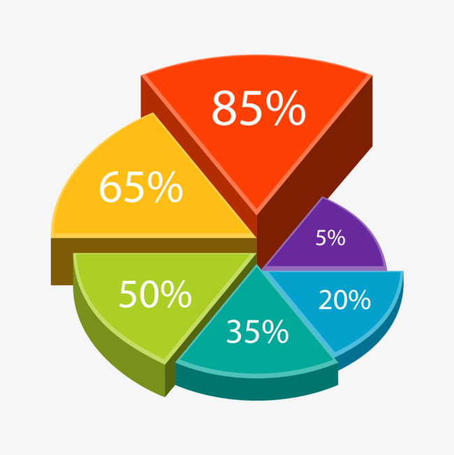
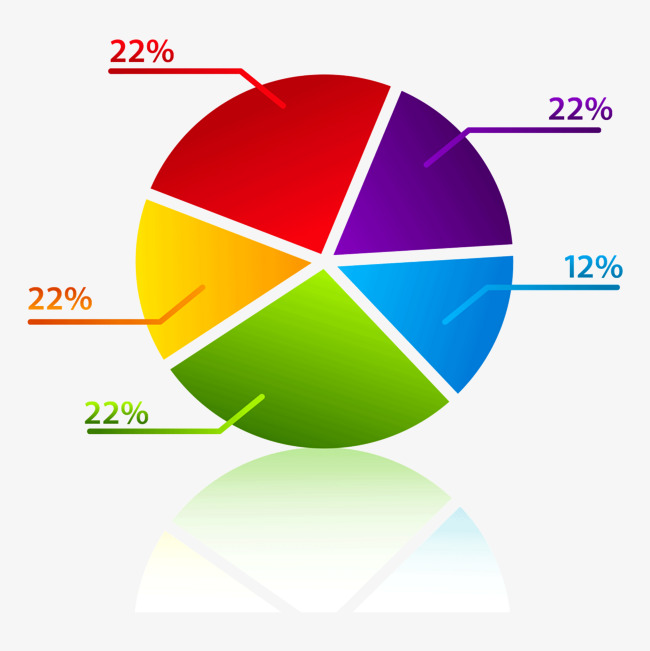

<nav class="navbar navbar-inverse">
        <div class="container-fluid">
            <div class="navbar-header">
                <a class="navbar-brand" routerLink="/administrador" href="">Encuestas SAG</a>
            </div>
            <ul  id="navbar" class="nav navbar-nav">
                <li class="pull-right"><a routerLink = "/login">Cerrar Sesión</a></li>
                <li><a href="#"></a></li>
                <!--<li><a href="#" style="color: white;"><?php echo $_SESSION['nombreUsuario']; ?></a></li>-->
            </ul>
        </div>
    </nav>

<script src="Highcharts-6.1.0/code/highcharts.js"></script>
<script src="Highcharts-6.1.0/code/highcharts-3d.js"></script>
<!--<script src="Highcharts-6.1.0/code/modules/exporting.js"></script>
<script src="Highcharts-6.1.0/code/modules/export-data.js"></script>-->

<div class="container" style="height: 400px">
    <div class="row"> 
      <div class="col-12 col-sm-10 col-md-8 col-lg-4 col-xl-4">
            <div class="card">
                <div class="card-img text-center">
                      
                </div>      
            </div>  
        </div>

        <div class="col-12 col-sm-10 col-md-8 col-lg-4 col-xl-4">
            <div class="card">
                <div class=" text-center">
                      
                </div>            
            </div>  
        </div>

      <div class="col-12 col-sm-10 col-md-8 col-lg-4 col-xl-4">
        <div class="card">
          <div class="card-img text-center">
              
          </div>    
          
        </div>  
      </div>
</div>
</div>


		<script type="text/javascript">

Highcharts.chart('container', {
    chart: {
        type: 'pie',
        options3d: {
            enabled: true,
            alpha: 45,
            beta: 0
        }
    },
    title: {
        text: 'Reporte Municipio por Zonas'
    },
    tooltip: {
        pointFormat: '{series.name}: <b>{point.percentage:.1f}%</b>'
    },
    plotOptions: {
        pie: {
            allowPointSelect: true,
            cursor: 'pointer',
            depth: 35,
            dataLabels: {
                enabled: true,
                format: '{point.name}'
            }
        }
    },
    series: [{
        type: 'pie',
        name: 'reporteLlamadas',
        data: [
            <?php 
            	$consulta = "SELECT l.idRespuesta, r.tipo "+
                            +" FROM respuestas r INNER JOIN llamadas l"+
                             +"ON r.idRespuesta = l.idRespuesta;";
                $noContesto   = 0;
                $respondioNoComer = 0;
                $respondioyComer = 0;
                

				if ($result_select = mysqli_query($conexion, $consulta)) {
				    while( $row = mysqli_fetch_array($result_select)){
                        if ($row['idRespuesta'] == 1) {
                            $noContesto = $noContesto+1;
                        }
                        if ($row['idRespuesta'] == 2) {
                            $respondioyComer = $respondioyComer+1;
                        }
                        if ($row['idRespuesta'] == 3) {
                            $respondioNoComer = $respondioNoComer+1;
                        }
                        

                    }
                }
		    ?>
					['No respondieron', <?php echo "$noContesto";?>],
                    ['Respondio y Comercializaron', <?php echo "$respondioyComer";?>],
                    ['Respondio y No Comercializaron', <?php echo "$respondioNoComer";?>]
		            
        ]
    }]
});
		</script>